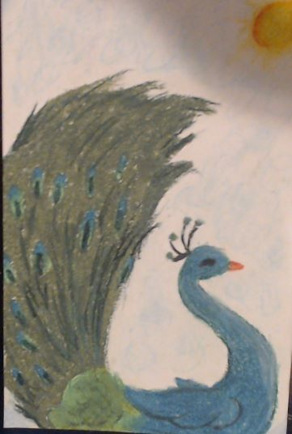

- This something called a Kandinsky Heart that I will teach you to draw! It is beginner level, and I drew it using oil pastels and a sharpie. Notice the swirls and colors in the circles!
- Wow. Just look at this shimmering peacock in the midday sun. I guarantee you will have lots of fun drawing this one! This peice of artwork was once again made with oil pastels, and is medium-beginner level. 